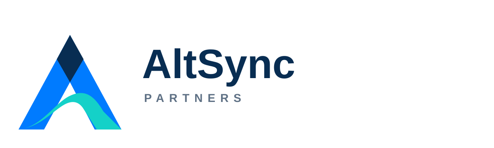

AltSync Partners
High-Velocity Technical Delivery. Zero Daytime Meeting Overhead.
We partner with small technology teams and independent delivery professionals to permanently resolve pipeline friction. We restore your engineering velocity without adding daytime meeting overhead.
Our Core Framework
- Asynchronous Execution: We protect the maker's schedule by moving coordination out of real-time calendars and into optimized, async tracking engines.
- Lean Operational Flow: We audit, locate, and aggressively strip out the procedural bottlenecks slowing down your software deployments.
- On-Demand Leadership: Get elite fractional delivery management exactly when you need it—completely free of permanent recruitment risk.
Facing execution roadblocks? Let’s map out a solution.
Contact a Partner